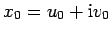
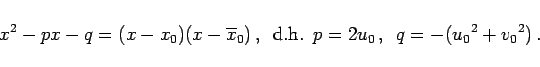
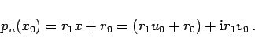
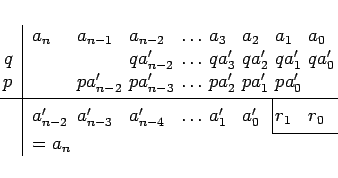
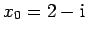
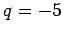

Inhalt Index DeskTop Bronstein

 Numerische Mathematik Numerische Lösung nichtlinearer Gleichungen Lösung von Polynomgleichungen Horner-Schema
Numerische Mathematik Numerische Lösung nichtlinearer Gleichungen Lösung von Polynomgleichungen Horner-Schema


Sind die Koeffizienten ak in (19.11) reell, so kann die Berechnung von pn(x0) für komplexe Werte  ganz im Reellen ablaufen. Dazu wird pn(x) wie folgt zerlegt:
|  | (19.18b) |
Es ist dann
|  | (19.18c) |
Zur Realisierung von (19.18a) kann man nach COLLATZ das folgende sogenannte zweizeilige HORNER-Schema aufstellen:
|  | (19.18d) |
| Beispiel |
|
p4(x)=x4+2x3-3x2-7. Der Funktionswert für , d.h. p=4 und , ist zu berechnen. |